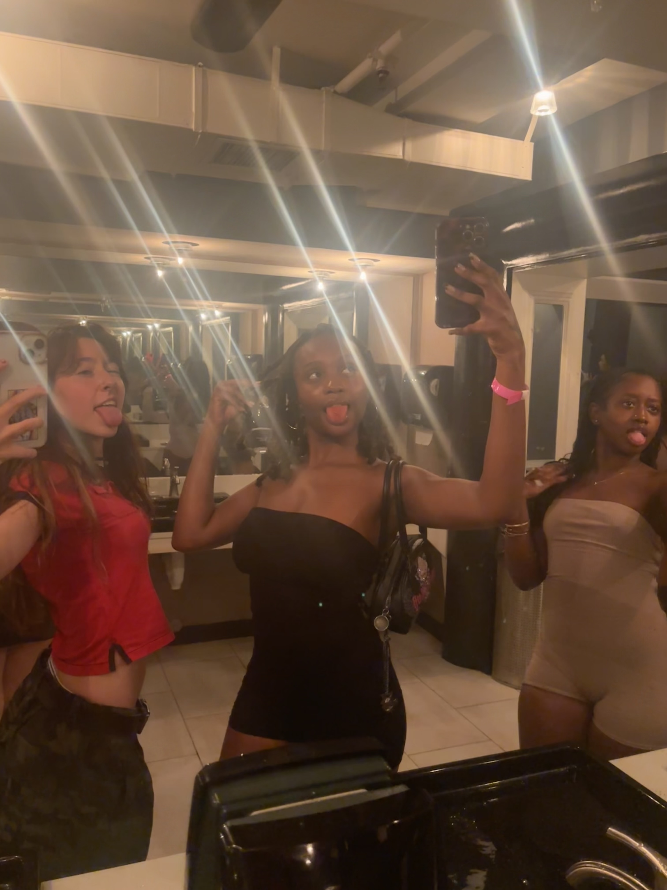
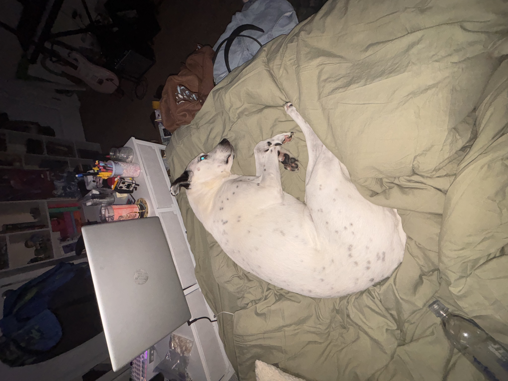

Personal Home Page
I am a fourth year computer science student also working on a minor degree in criminal justice! My concentration in computer science is Cybersecurity and I can't wait to be finished... only to move onto my Master's.
A little more about me...
- I love to go out with my friends.
- I have a dalmatian/pitbull mix named Jagger.
- I love pictures of the sky.
Some Pics!

